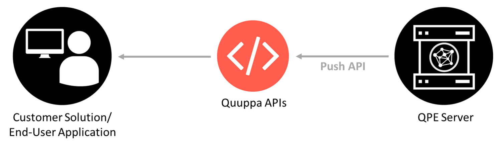

Select an API Protocol and an Output Format
The Quuppa APIs are a convenient and flexible way to connect and interact with the Quuppa Positioning Engine (QPE) to retrieve various types of data about your project using REST APIs or UDP Push.
For your project, you can select the API protocol and output format that best suit your needs. This section aims to give some background into these options to help you select the right one for your project.
API Protocols
The Quuppa APIs offer two ways for retrieving data from the QPE, using REST API requests or UDP Push messages. The optimal option will depend on your use case and the demands that it places on your application.
REST API
The client application makes a request to retrieve specific data from the QPE server using a REST Pull request. The QPE server provides the requested data in an API response using the selected output format (JSON or CSV).

This method (i.e. polling) is a standard and commonly used way to retrieve information from a server, making them easy to use and flexible.
While easy to use and a good option for many implementations, it's good to note in cases with large volumes of data (e.g. if you have thousands of tags) that require minimum latency, this method may not be optimal as the continuous pull requests may cause unnecessary processing load. To minimise this, we recommend that you keep the poll rate below 5 Hz.
UDP Push
The system is set up so that the QPE server provides UDP push messages in the selected output format (JSON or CSV) to the end-user application whenever one of the predefined data fields is updated. The application does not need to continuously request (poll) data from the server, and only receives the relevant new data when an update is available.

This option is best suited for solutions that cannot tolerate latency or have a large volume of tags providing vast quantities of data that could otherwise overwhelm the processing capacity of the system. In such cases, it is more efficient that the QPE server only provides the information that has changed when an update is available.
API Output Types
The Quuppa REST API and UDP Push offer two output types. The best option for you will depend on your project.
- JSON - JavaScript Object Notation (JSON) is a popular, open and standard
data format that is easily readable for both humans and machines. This is the
default response format, if the output format is not specified.

- CSV - Comma-separated values (CSV) is a simple data format that uses
commas to separate values.